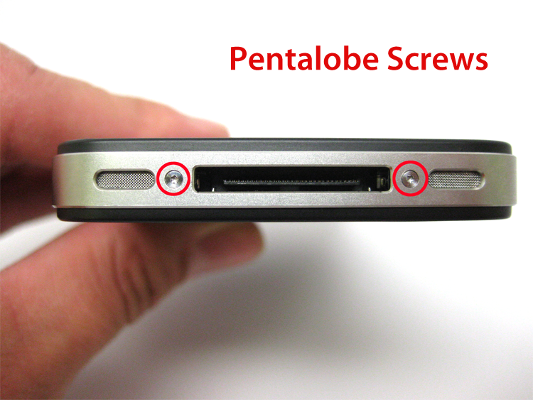

Avoiding the Pentalobe
API Philosophy for Product Companies
API Strategy Conference, 2013
R. Kevin Nelson
 @rknLA
@rknLA

Application
Programming
Interface
n. a program or piece of software designed and written to fulfill a particular purpose of the user
n. a planned series of future events, items, or performances
n. a device or program for connecting two items of hardware or software so that they can be operated jointly or communicate with each other
These are all interfaces!

https://blog.twitter.com/2011/finagle-a-protocol-agnostic-rpc-system
What happens when you outsoure some of these components?
We sell shortcuts.
-Nathan Seidle, What does SparkFun do?
Problem:
None of your shortcuts are standardized.